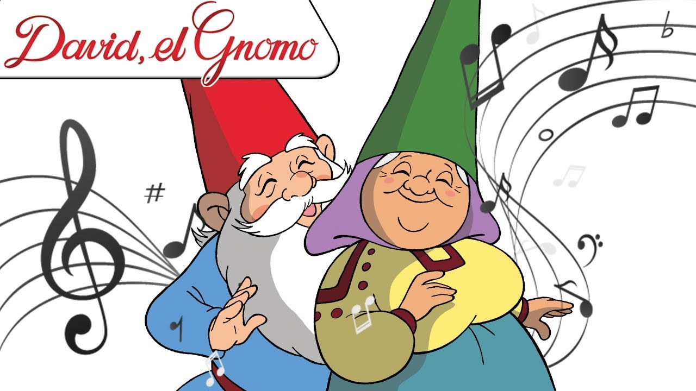

Presione aquí para volver al menú
Los Gnomos y la Música
Los gnomos fabrican sus propios instrumentos musicales inimaginables. No desdeñan los creados por los humanos, sino que los hacen a su manera.
